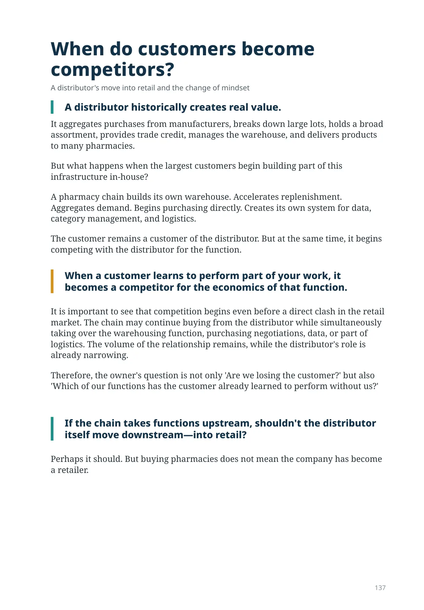
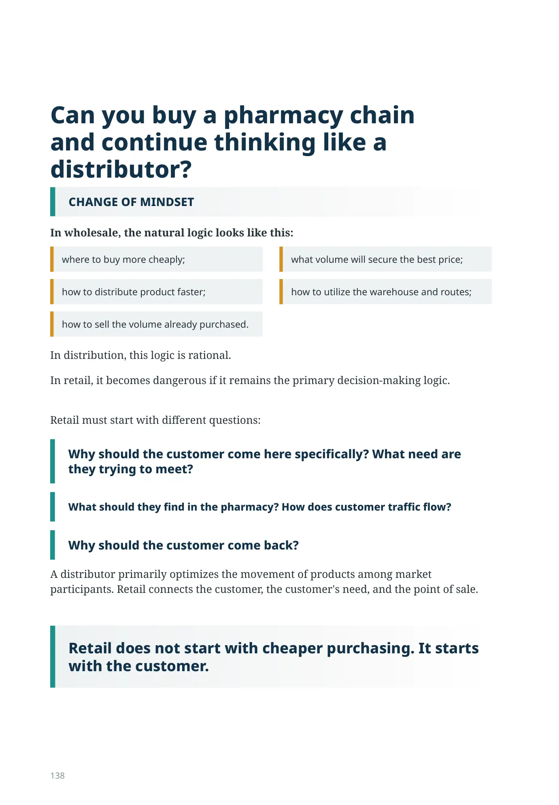
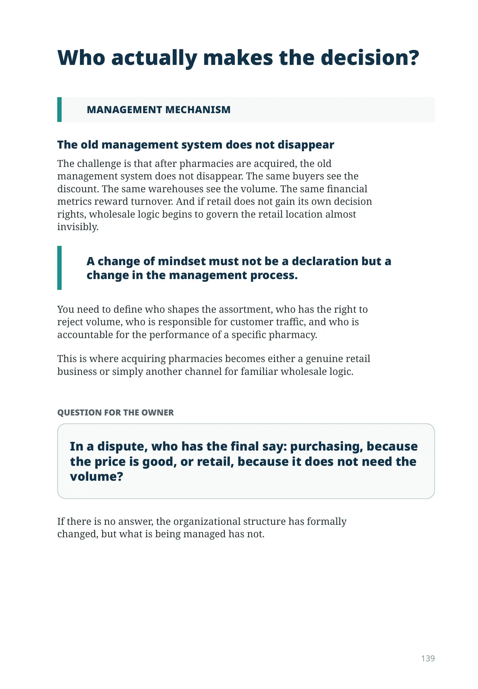
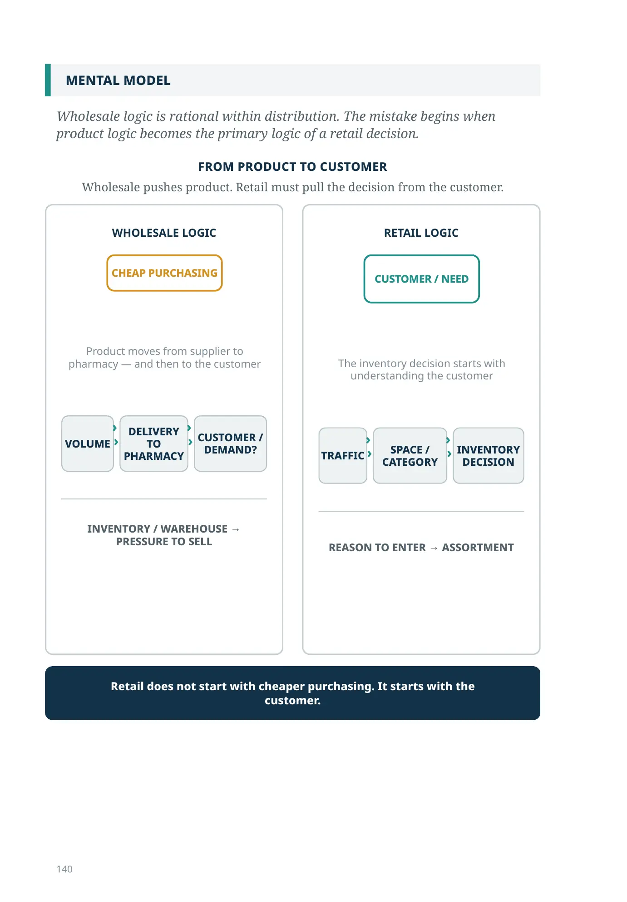
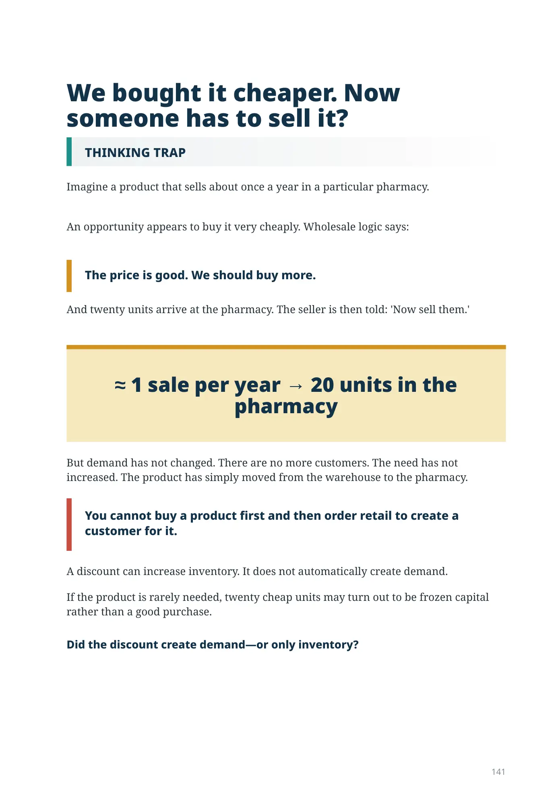
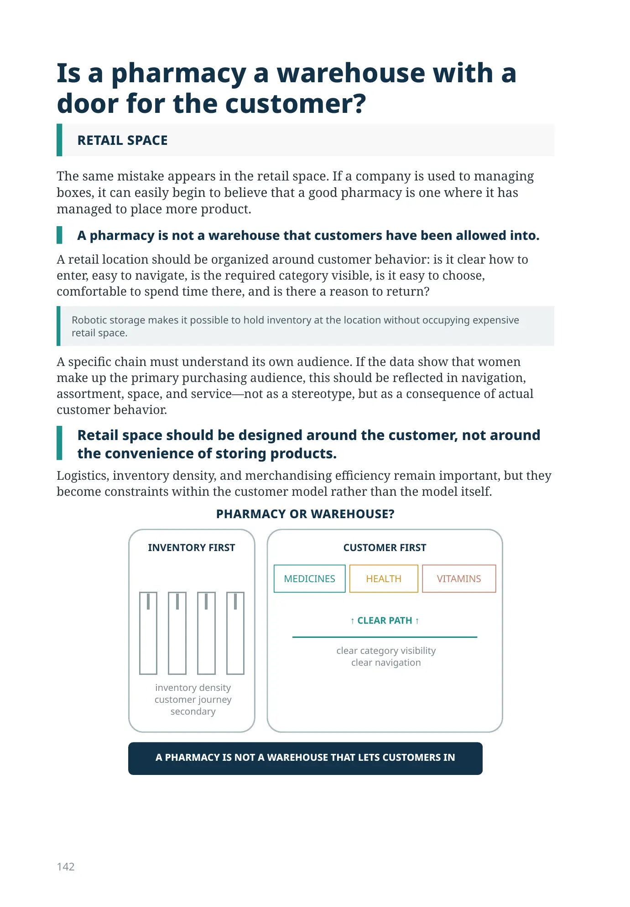
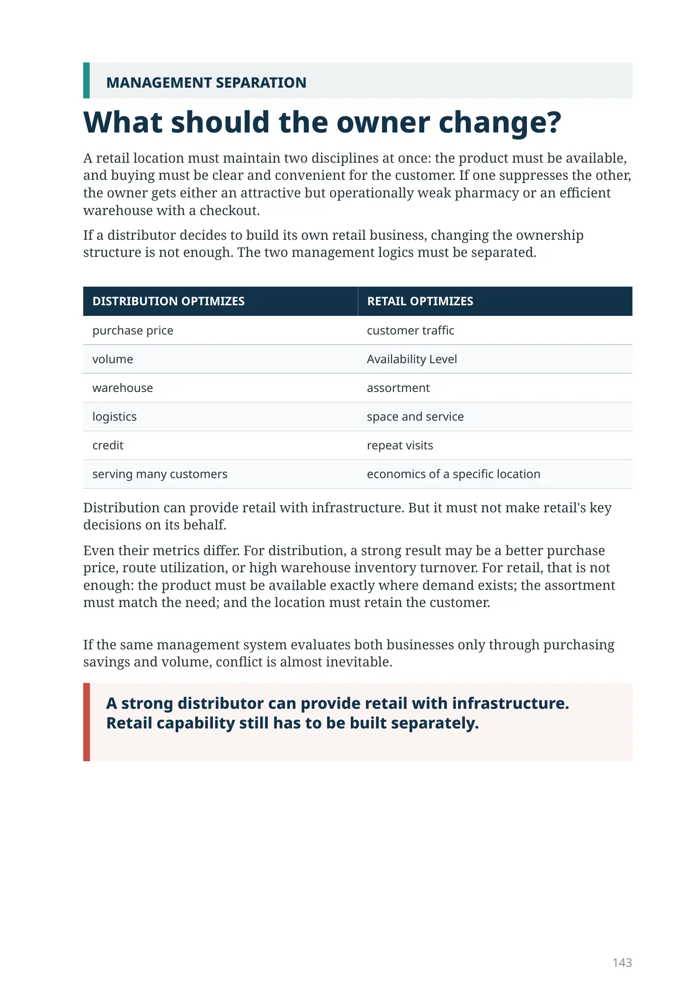
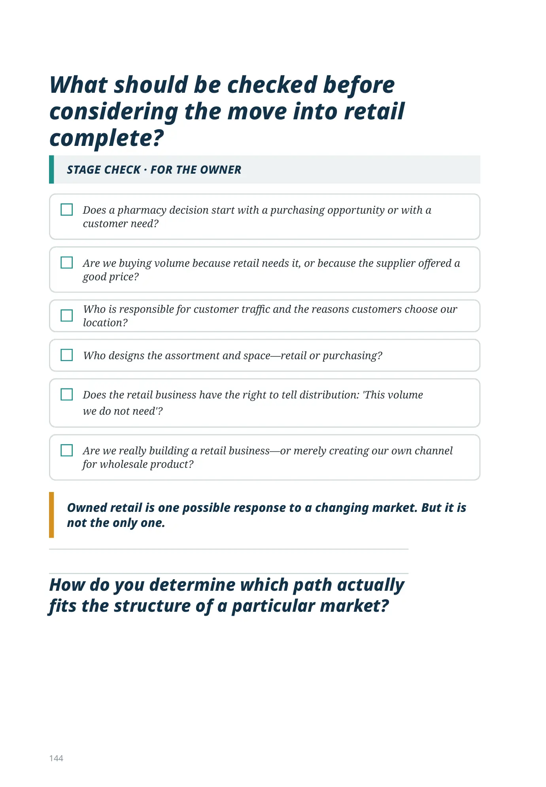
When do customers become competitors?
A distributor's move into retail and the change of mindset
A distributor historically creates real value.
It aggregates purchases from manufacturers, breaks down large lots, holds a broad assortment, provides trade credit, manages the warehouse, and delivers products to many pharmacies.
But what happens when the largest customers begin building part of this infrastructure in-house?
A pharmacy chain builds its own warehouse. Accelerates replenishment. Aggregates demand. Begins purchasing directly. Creates its own system for data, category management, and logistics.
The customer remains a customer of the distributor. But at the same time, it begins competing with the distributor for the function.
When a customer learns to perform part of your work, it becomes a competitor for the economics of that function.
It is important to see that competition begins even before a direct clash in the retail market. The chain may continue buying from the distributor while simultaneously taking over the warehousing function, purchasing negotiations, data, or part of logistics. The volume of the relationship remains, while the distributor's role is already narrowing.
Therefore, the owner's question is not only 'Are we losing the customer?' but also 'Which of our functions has the customer already learned to perform without us?'
If the chain takes functions upstream, shouldn't the distributor itself move downstream—into retail?
Perhaps it should. But buying pharmacies does not mean the company has become a retailer.
Can you buy a pharmacy chain and continue thinking like a distributor?
In wholesale, the natural logic looks like this:
- where to buy more cheaply;
- what volume will secure the best price;
- how to distribute product faster;
- how to utilize the warehouse and routes;
- how to sell the volume already purchased.
In distribution, this logic is rational.
In retail, it becomes dangerous if it remains the primary decision-making logic.
Retail must start with different questions:
Why should the customer come here specifically? What need are they trying to meet?
What should they find in the pharmacy? How does customer traffic flow?
Why should the customer come back?
A distributor primarily optimizes the movement of products among market participants. Retail connects the customer, the customer's need, and the point of sale.
Retail does not start with cheaper purchasing. It starts with the customer.
Who actually makes the decision?
The old management system does not disappear
The challenge is that after pharmacies are acquired, the old management system does not disappear. The same buyers see the discount. The same warehouses see the volume. The same financial metrics reward turnover. And if retail does not gain its own decision rights, wholesale logic begins to govern the retail location almost invisibly.
A change of mindset must not be a declaration but a change in the management process.
You need to define who shapes the assortment, who has the right to reject volume, who is responsible for customer traffic, and who is accountable for the performance of a specific pharmacy.
This is where acquiring pharmacies becomes either a genuine retail business or simply another channel for familiar wholesale logic.
Question for the owner
In a dispute, who has the final say: purchasing, because the price is good, or retail, because it does not need the volume?
If there is no answer, the organizational structure has formally changed, but what is being managed has not.
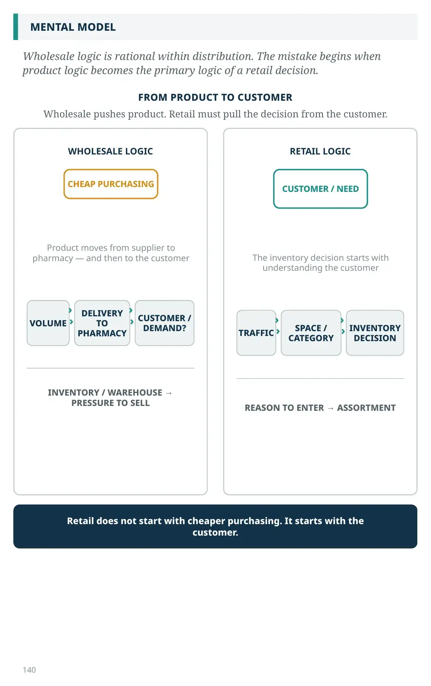
Wholesale logic is rational within distribution. The mistake begins when product logic becomes the primary logic of a retail decision.
WHOLESALE LOGIC
RETAIL LOGIC
We bought it cheaper. Now someone has to sell it?
Imagine a product that sells about once a year in a particular pharmacy.
An opportunity appears to buy it very cheaply. Wholesale logic says:
The price is good. We should buy more.
And twenty units arrive at the pharmacy. The seller is then told: 'Now sell them.'
≈ 1 sale per year → 20 units in the pharmacy
But demand has not changed. There are no more customers. The need has not increased. The product has simply moved from the warehouse to the pharmacy.
You cannot buy a product first and then order retail to create a customer for it.
A discount can increase inventory. It does not automatically create demand.
If the product is rarely needed, twenty cheap units may turn out to be frozen capital rather than a good purchase.
Did the discount create demand—or only inventory?
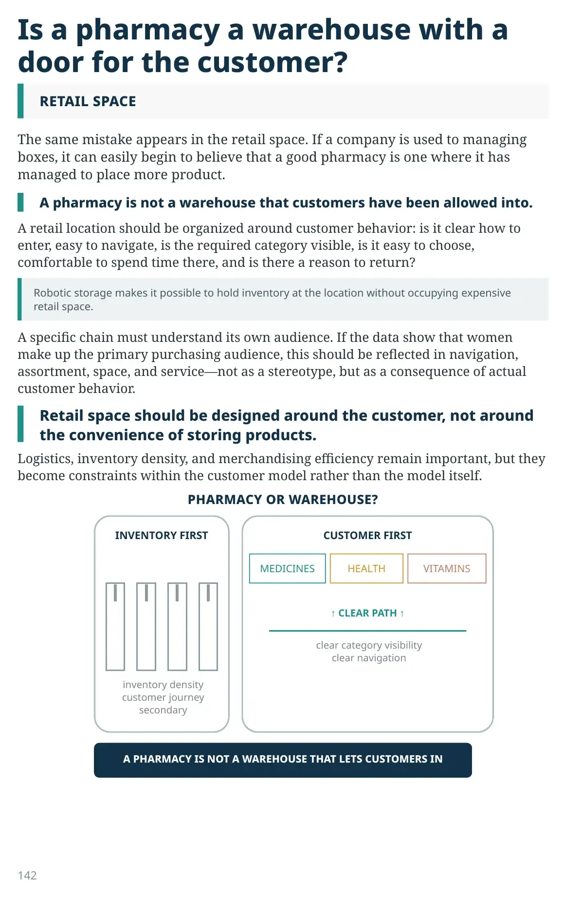
Is a pharmacy a warehouse with a door for the customer?
The same mistake appears in the retail space. If a company is used to managing boxes, it can easily begin to believe that a good pharmacy is one where it has managed to place more product.
A pharmacy is not a warehouse that customers have been allowed into.
A retail location should be organized around customer behavior: is it clear how to enter, easy to navigate, is the required category visible, is it easy to choose, comfortable to spend time there, and is there a reason to return?
Robotic storage makes it possible to hold inventory at the location without occupying expensive retail space.
A specific chain must understand its own audience. If the data show that women make up the primary purchasing audience, this should be reflected in navigation, assortment, space, and service—not as a stereotype, but as a consequence of actual customer behavior.
Retail space should be designed around the customer, not around the convenience of storing products.
Logistics, inventory density, and merchandising efficiency remain important, but they become constraints within the customer model rather than the model itself.
INVENTORY FIRST
inventory density customer journey secondary
CUSTOMER FIRST
clear category visibility clear navigation
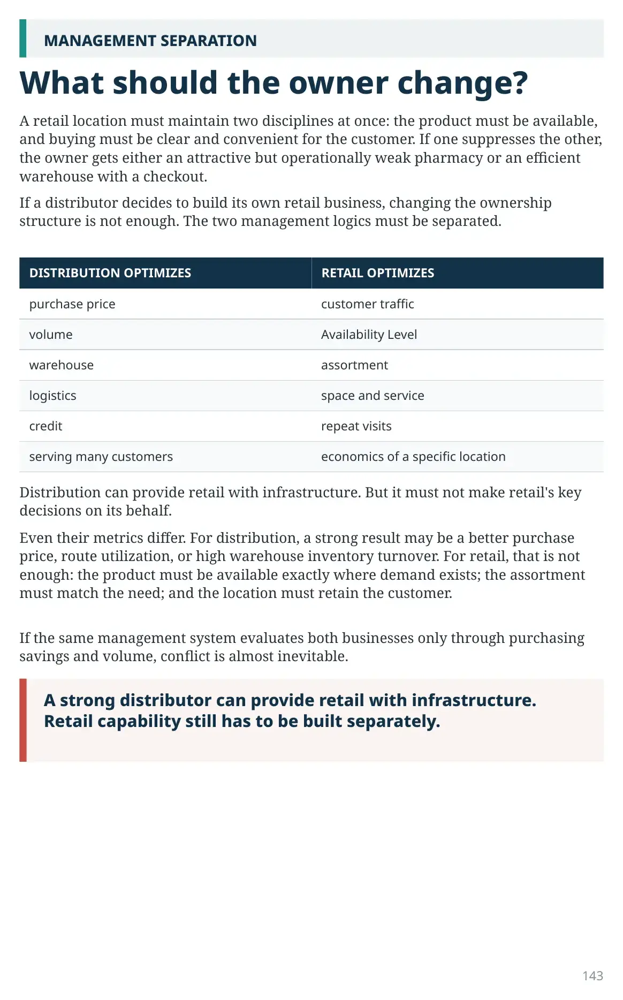
What should the owner change?
A retail location must maintain two disciplines at once: the product must be available, and buying must be clear and convenient for the customer. If one suppresses the other, the owner gets either an attractive but operationally weak pharmacy or an efficient warehouse with a checkout.
If a distributor decides to build its own retail business, changing the ownership structure is not enough. The two management logics must be separated.
| DISTRIBUTION OPTIMIZES | RETAIL OPTIMIZES |
|---|---|
| purchase price | customer traffic |
| volume | Availability Level |
| warehouse | assortment |
| logistics | space and service |
| credit | repeat visits |
| serving many customers | economics of a specific location |
Distribution can provide retail with infrastructure. But it must not make retail's key decisions on its behalf.
Even their metrics differ. For distribution, a strong result may be a better purchase price, route utilization, or high warehouse inventory turnover. For retail, that is not enough: the product must be available exactly where demand exists; the assortment must match the need; and the location must retain the customer.
If the same management system evaluates both businesses only through purchasing savings and volume, conflict is almost inevitable.
A strong distributor can provide retail with infrastructure. Retail capability still has to be built separately.
What should be checked before considering the move into retail complete?
- Does a pharmacy decision start with a purchasing opportunity or with a customer need?
- Are we buying volume because retail needs it, or because the supplier offered a good price?
- Who is responsible for customer traffic and the reasons customers choose our location?
- Who designs the assortment and space—retail or purchasing?
- Does the retail business have the right to tell distribution: 'This volume
we do not need'?
- Are we really building a retail business—or merely creating our own channel for wholesale product?